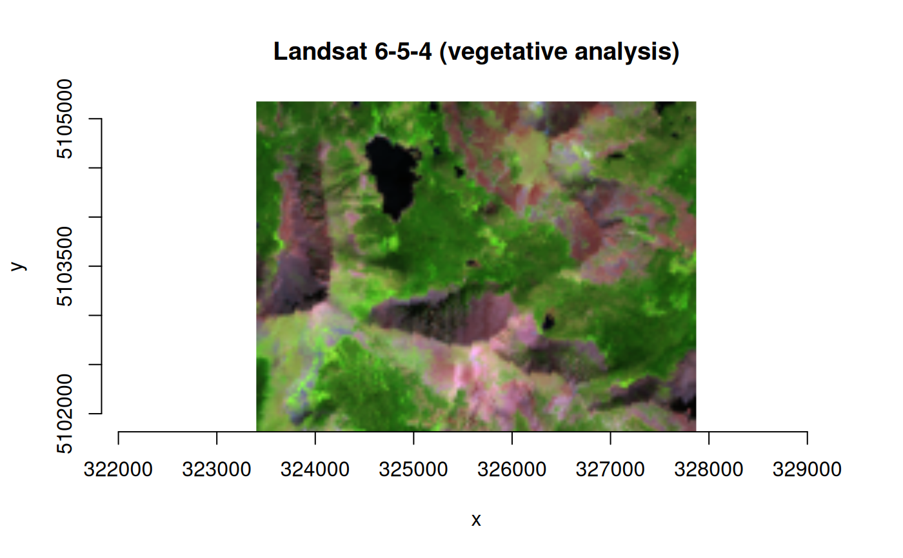

buildVRT() is a wrapper of the gdalbuildvrt command-line
utility for building a VRT (Virtual Dataset) that is a mosaic of the list
of input GDAL datasets
(see https://gdal.org/en/stable/programs/gdalbuildvrt.html).
Details
Several command-line options are described in the GDAL documentation at the
URL above. By default, the input files are considered as tiles of a larger
mosaic and the VRT file has as many bands as one of the input files.
Alternatively, the -separate argument can be used to put each input
raster into a separate band in the VRT dataset.
Some amount of checks are done to assure that all files that will be put in
the resulting VRT have similar characteristics: number of bands,
projection, color interpretation.... If not, files that do not match the
common characteristics will be skipped. (This is true in the default
mode for virtual mosaicing, and not when using the -separate option).
In a virtual mosaic, if there is spatial overlap between input rasters then the order of files appearing in the list of sources matter: files that are listed at the end are the ones from which the data will be fetched. Note that nodata will be taken into account to potentially fetch data from less priority datasets.
Examples
# build a virtual 3-band RGB raster from individual Landsat band files
b4_file <- system.file("extdata/sr_b4_20200829.tif", package="gdalraster")
b5_file <- system.file("extdata/sr_b5_20200829.tif", package="gdalraster")
b6_file <- system.file("extdata/sr_b6_20200829.tif", package="gdalraster")
band_files <- c(b6_file, b5_file, b4_file)
vrt_file <- file.path(tempdir(), "storml_b6_b5_b4.vrt")
buildVRT(vrt_file, band_files, cl_arg = "-separate")
#> 0...10...20...30...40...50...60...70...80...90...100 - done.
ds <- new(GDALRaster, vrt_file)
ds$getRasterCount()
#> [1] 3
plot_raster(ds, nbands=3, main="Landsat 6-5-4 (vegetative analysis)")

ds$close()